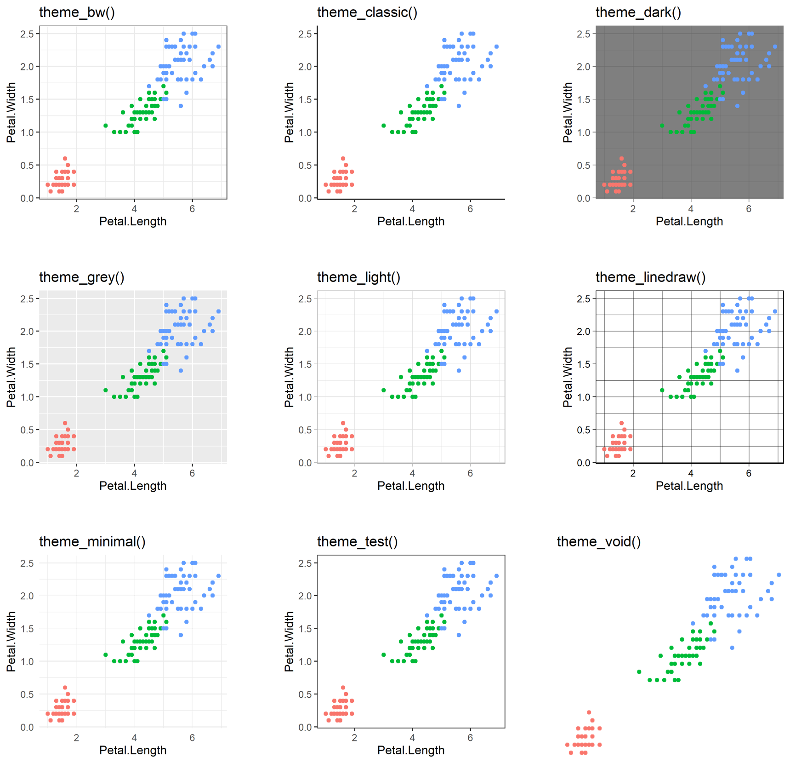
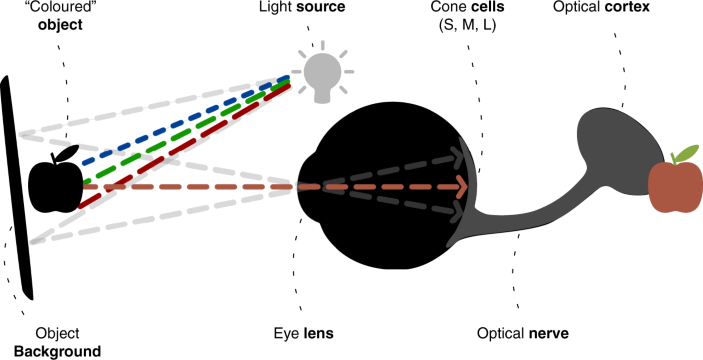
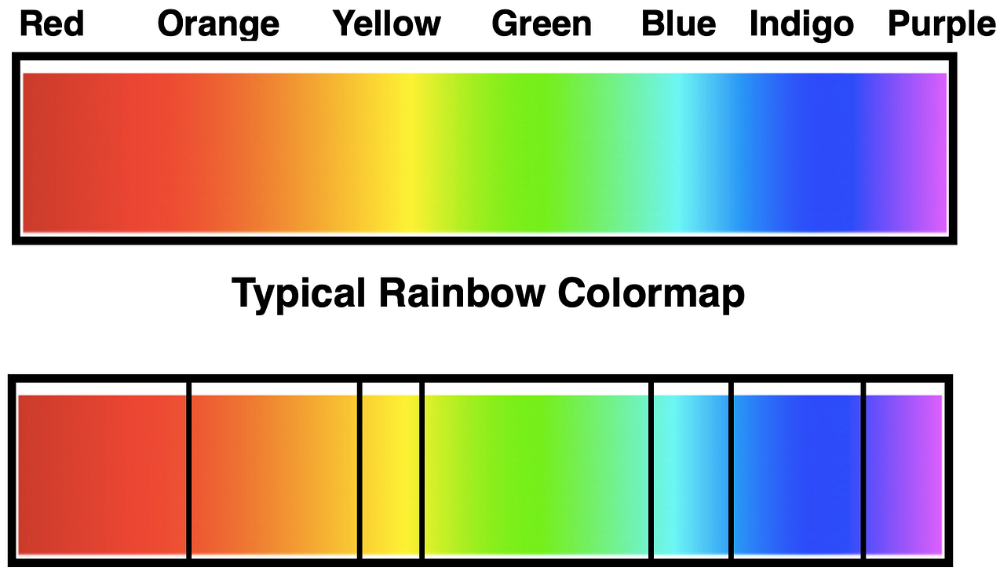
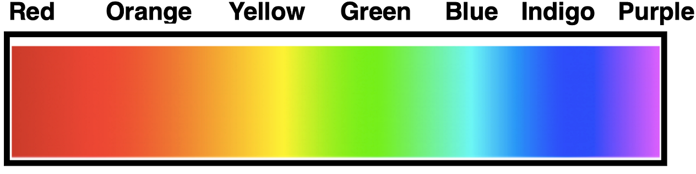
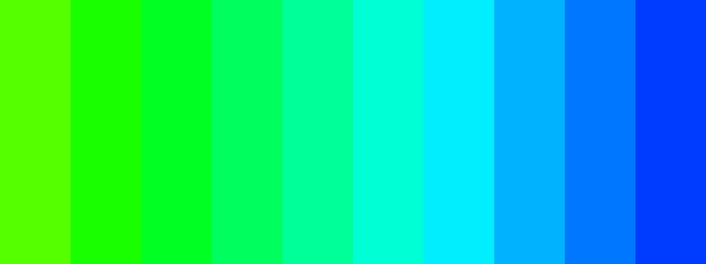
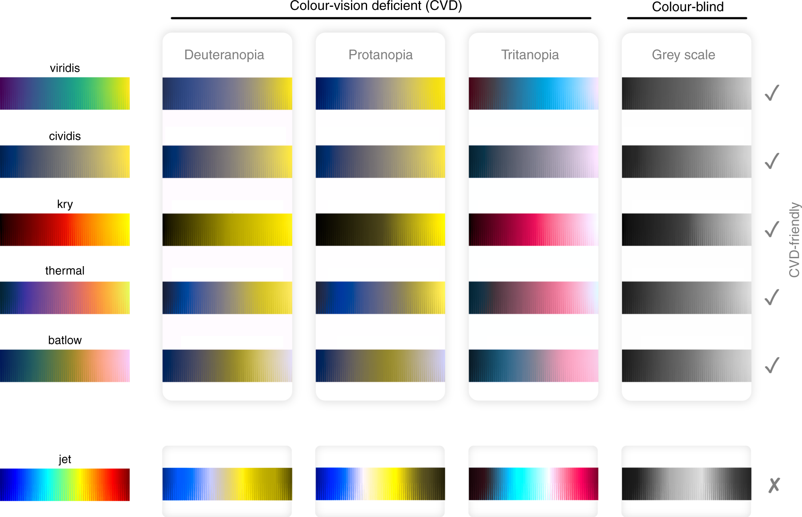
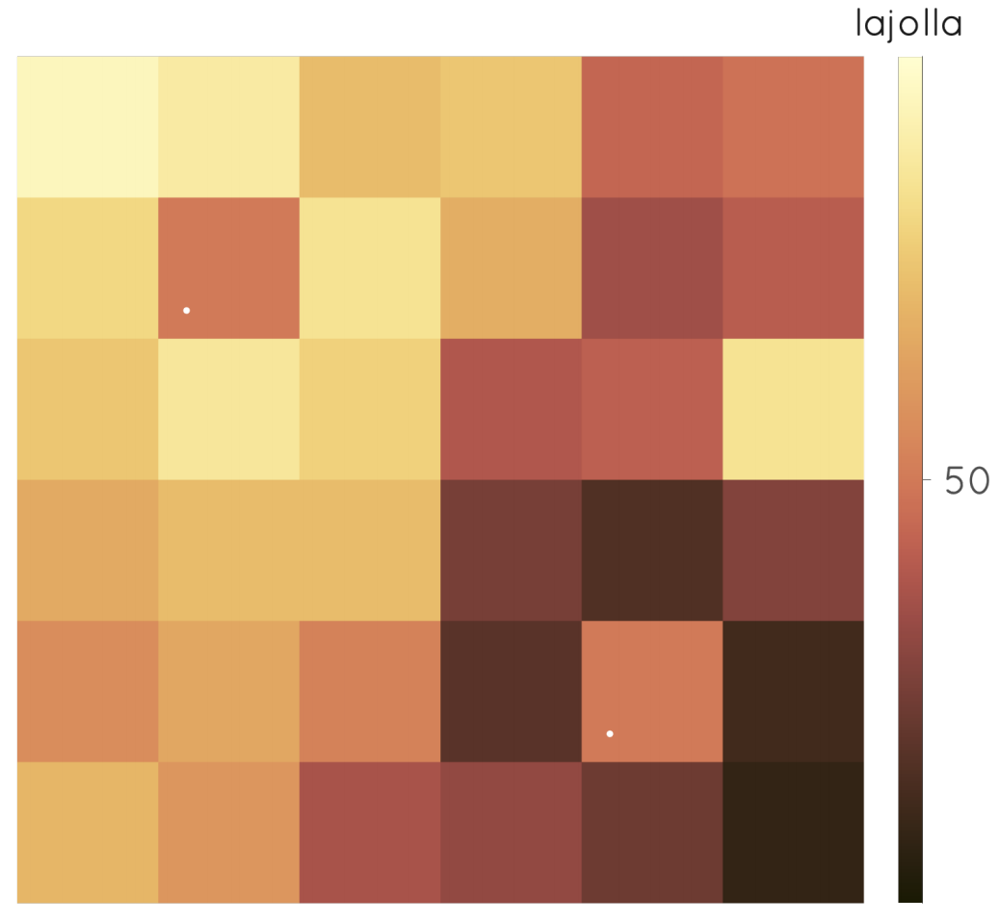
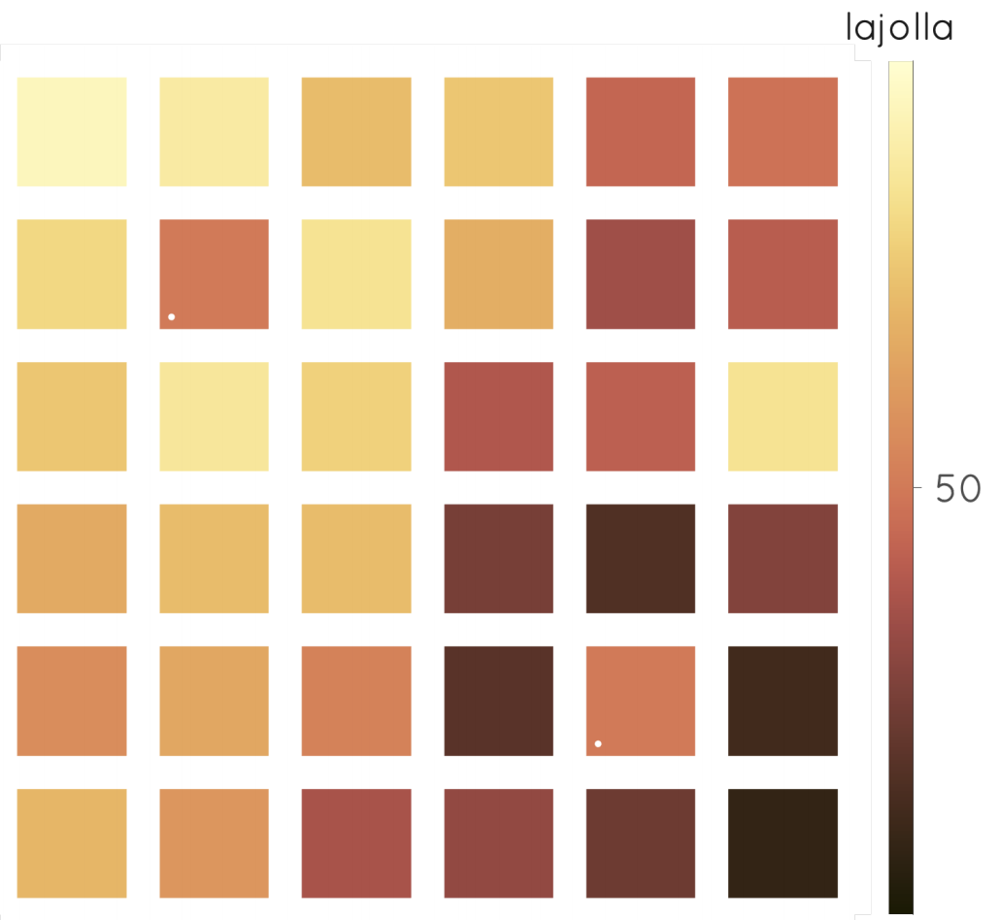
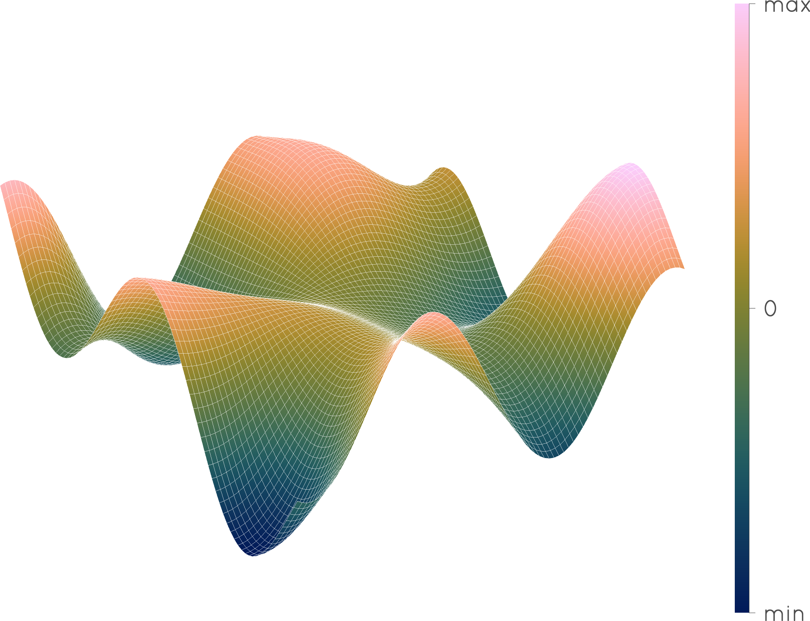
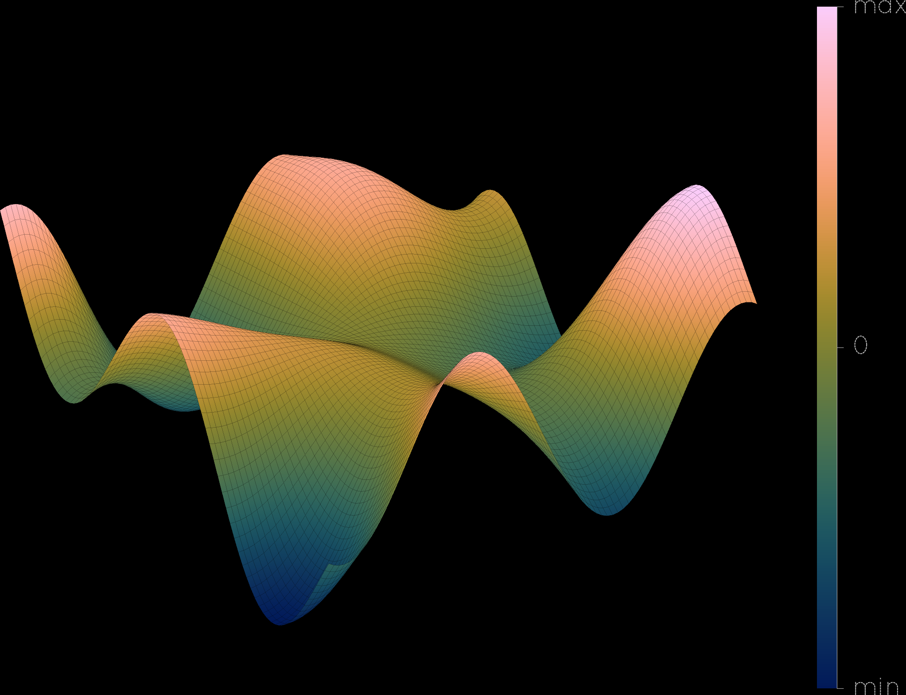

Block 3
Deepak Tanwar
Recap of Block 2
- Grammar of Graphics (
gg): We were introduced to the Grammar of Graphics, a systematic way to describe and build plots.
ggplot2Components: We learned thatggplot2is based on the idea that you can build any plot from the same components: a data set, a coordinate system, and geoms (visual marks that represent data points).
- Layers: We build plots by adding layers.
Faceting the plots

Themes
Simplified schematic of human color perception
Rainbow colormap
Perceptually non-uniform color spaces



Perceptually non-uniform color spaces
This explains why a majority of the rectangles are green, and why we see a sudden shift towards blue at the end of the scale.
Perceptually uniform color spaces
Non-uniform
Uniform
If we want to operate with color as it relates to the human vision, we need a color space built on these human measurements, and that is what perceptually uniform color spaces are.
Color selection is important
Spot the difference


Background of plots


Incorrect use of colors could lead to the effective manipulation of data
Group exercise
Search on internet “the misuse of colour in science communication”
Go to the Figue 6 of the paper
Group 1: Top half of the figure
Group 2: Bottom half of the figureDiscuss the flowchart
Discuss about the color class type and combination for all the figures we have made in Exercises
Saving Plots for Publication
ggsave(): The easiest way to save a plot.
- Vector vs. Raster:
- Vector (PDF, SVG): Best for publications. Scalable without losing quality.
- Raster (PNG, TIFF): Pixel-based. Good for web, but can lose quality when scaled.
- Resolution (DPI): Dots Per Inch. Journals often require 300 DPI or higher for raster images.
Saving Plots for Publication
Customizing Stylistic Elements
theme(): The powerhouse for customizing the non-data elements of your plot.- Fonts: Change font family, size, and face (bold, italic).
- Line Weights: Adjust the thickness of axis lines, grid lines, and borders.
Interactive Plots with ggplotly
ggplotly(): A function from theplotlypackage that transforms aggplotobject into an interactive plot.- Great for exploring data, as you can hover over points to see values, zoom in and out, and pan around.
Interactive Plots with ggplotly
Publication ready figures with R